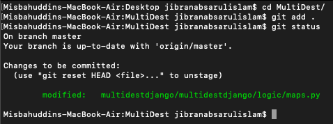
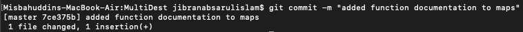
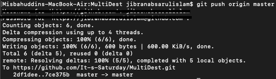

There are a bunch of necessary steps to get your changes tracked and merged.
- First thing's first: enter your repo using cd
- Use git status to check what changes have been made.
- Note: This is a general guide; for the proper workflow for a feature, please see Feature Development
Secret
- ADD
- COMMIT
- PUSH
-
Another Secret
- ADD
- COMMIT
- PUSH
These steps are REQUIREDDD
- git add filestotrack
- This command is used to add your files to be tracked by Git.
- For
filestotrack, I would usually use . or *
- For our purposes, use git add *. This adds all files in your working directory.
Result

- git commit -m "your message in between quotes"
- In your message, include a brief (but specific) explanation of what you changed.
Result

- git push origin branchname
- I doubt that the origin field will change, but
branchname is important.
- I would think of branches like potential features, waiting to merge. The main code
is located on the
main or master branch
(naming convention depends on who you ask). We create branches to avoid messing with the
main source, in case anything we change goes wrong.
- For this example, we do git push origin master since we're demonstrating working on
the
master branch.
Result
